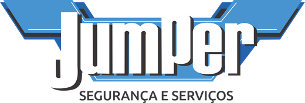
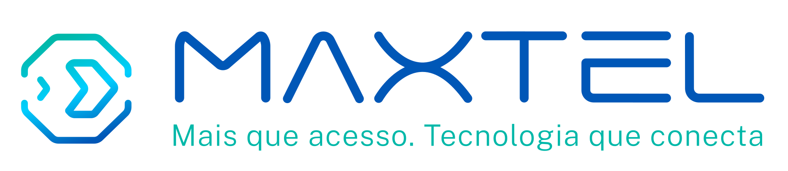
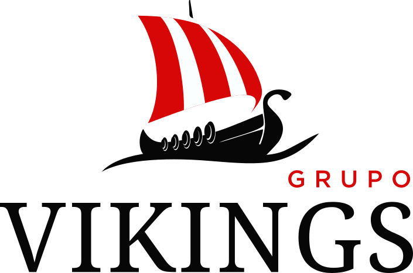
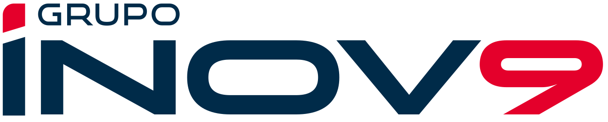

UX/UI Designer • Product Designer • Front-end Developer
Transformo ideias em produtos digitais que unem estratégia.
Com mais de 18 anos de experiência, ajudo empresas a criar sites, sistemas e produtos digitais que combinam UX/UI Design, desenvolvimento Front-end e visão de negócio. Meu foco é desenvolver soluções intuitivas, performáticas e orientadas a resultados, acompanhando todo o processo, da estratégia à implementação.

"Acredito que um bom produto nasce do equilíbrio entre estratégia, experiência do usuário e execução técnica. Por isso, participo de todo o processo: da definição do problema à entrega da solução."




Especialidades
Minha atuação vai além da criação de interfaces. Combino estratégia, experiência do usuário e desenvolvimento para transformar desafios de negócio em soluções digitais completas.
UX Strategy & Research
Analiso objetivos de negócio, necessidades dos usuários e oportunidades de melhoria para definir soluções que façam sentido tanto para a empresa quanto para quem utiliza o produto.
UX/UI Design
Projeto interfaces modernas, acessíveis e responsivas, priorizando clareza, usabilidade e consistência para criar produtos fáceis de aprender e agradáveis de utilizar.
Desenvolvimento Front-end
Transformo projetos em aplicações reais utilizando tecnologias modernas, garantindo fidelidade ao design, performance e facilidade de manutenção.
Performance & Otimização
Melhoro velocidade, SEO técnico, acessibilidade e conversão para que o produto ofereça uma excelente experiência e gere melhores resultados.
Inteligência Artificial & Automação
Utilizo IA e automações para acelerar processos, criar fluxos inteligentes e otimizar tarefas, aumentando a eficiência do desenvolvimento e da operação digital.
Visão de Produto
Cada decisão de design considera indicadores, impacto no usuário e metas da empresa, buscando equilíbrio entre experiência, tecnologia e resultados.
Projetos em Destaque
Conheça casos práticos onde uni UX/UI e front-end para construir produtos digitais orientados a conversão e escala.
Jumper Segurança - Site Institucional
Landing page com animação 3D controlada pelo scroll. Direção visual, geração de cenas com IA e desenvolvimento em Vite, Tailwind e GSAP.
Grupo Vikings - Site Institucional
Site institucional para grupo de facilities e segurança, com cards animados por scroll, arquitetura multimarca e versão bilíngue PT/EN.

Kwik Ledgers - Plataforma Global
Redesign de sistema contábil internacional focado em usabilidade para fluxos de dados massivos.

Site Institucional - KwikLedgers
Projeto de criação de uma nova proposta de site institucional conforme especificações em anexo.

Totem Interativo - Feira de Negócios
Interface otimizada para totem em ponto de venda. Layout completo desenvolvido com IA para eficiência e inovação visual.
Sobre mim
Ao longo de mais de 18 anos, trabalhei em agências, produtos SaaS e projetos internacionais, sempre no ponto de encontro entre design e tecnologia. Essa trajetória me permite conduzir um projeto do discovery à implementação, conversando tanto com times de negócio quanto de engenharia — o que torna a entrega mais rápida, consistente e alinhada aos objetivos.
Experiência Profissional
Zalieza
V4 Company
Atuação estratégica em UX/UI com foco absoluto em conversão e crescimento de negócios digitais. Aplicação de IA no fluxo de design, acelerando entregas e padronizando componentes. Integração Figma + Cursor para ganho de escala e performance.
Ambra IT
Designer de Produtos no Kwik Ledgers, plataforma de contabilidade internacional. Condução ponta a ponta: discovery, fluxos, wireframes, protótipos em alta fidelidade e desenvolvimento de interfaces acessíveis.
OmniChat
Evolução contínua da interface do SaaS OmniChat. Transformação de complexos requisitos de negócio em UIs fluidas e intuitivas, consolidando a visão de design diretamente na engenharia front-end.
Tecnologias
Cada ferramenta tem um papel dentro do processo. Abaixo, o que utilizo em cada etapa, da concepção do design à operação do produto no ar.
Design
Da ideia ao protótipo navegável.
Front-end
Interfaces reais, fiéis ao design.
CMS
Sites que o time consegue manter sozinho.
Performance
Velocidade, SEO e conversão medidos.
Automação
IA aplicada ao fluxo de trabalho.
Como transformo ideias em produtos digitais
Um método claro e transparente, do primeiro contato à evolução contínua do produto. Cada etapa entrega algo concreto e prepara a seguinte.
Discovery
Compreensão do negócio, objetivos e necessidades.
Pesquisa & Estratégia
Mapeamento da experiência e definição da solução.
UX/UI Design
Wireframes, protótipos e interfaces.
Desenvolvimento
Implementação Front-end e integrações.
Otimização
Performance, SEO, métricas e melhorias contínuas.